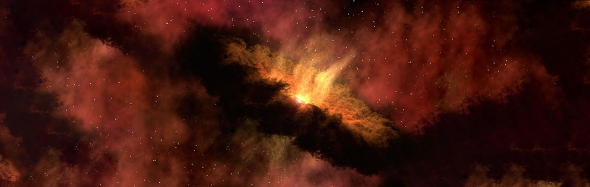
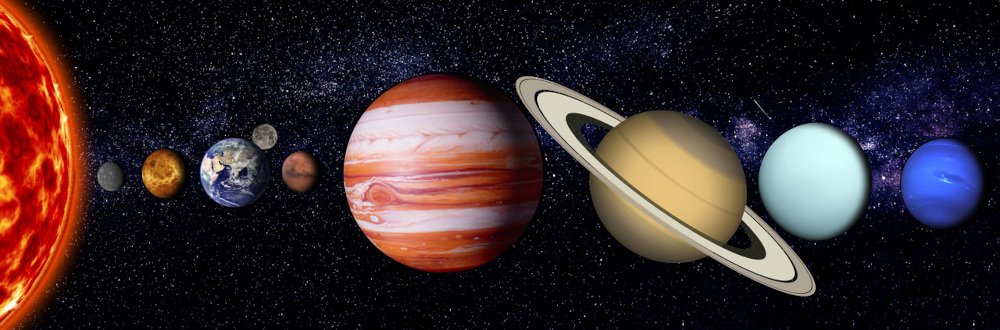
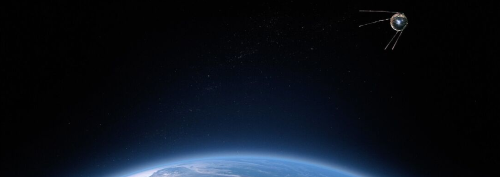

O Sistema Solar
 "Em algum sentido profundo, todas as estrelas são nossas irmãs; são parte de nossa família cósmica." - Carl SaganNosso gigante jardim escuro
Olá viajante espacial, seja bem-vindo ao nosso Sistema Solar, um vasto jardim espacial que orbita em torno do brilhante Sol.
Aqui, os planetas, satélites e até planetas-anões compõem essa fascinante família cósmica. Cada membro dessa comunidade celeste tem sua própria personalidade, desde os rochosos como a Terra até os gigantes gasosos como Júpiter. As luas, como companheiras leais, dançam ao redor de seus planetas hospedeiros.
Nossa jornada por esse gigante jardim escuro continua a revelar maravilhas cósmicas e a desvendar os mistérios do passado cósmico. Ao explorar esses cantos celestiais, descobrimos não apenas mais sobre nossa casa planetária, mas também sobre as histórias fascinantes dos planetas-anões, asteroides e cometas que povoam esse espaço cósmico. Em resumo, o Sistema Solar é um palco dinâmico onde a ciência e a curiosidade nos conduzem a uma compreensão cada vez maior do universo que chamamos de lar.
De onde viemos? Para onde vamos?
Em meio às maravilhas do Sistema Solar, surge a eterna questão: de onde viemos e para onde vamos? Essa indagação transcende os limites celestiais, guiando-nos a explorar não apenas os segredos cósmicos de nossa origem, mas também a contemplar o futuro da exploração espacial. Neste vasto jardim escuro, a curiosidade humana nos impulsiona a desbravar o desconhecido, buscando respostas que possam iluminar não apenas o passado, mas também o caminho adiante.
Ao infinito... e além!
Navegue pelo nosso site e descubra as maiores curiosidades cósmicas do nosso sistema solar. Em cada página, embarque em uma jornada fascinante, explorando desde os planetas mais próximos, como Mercúrio e Vênus, até os gigantes gasosos que reinam nas fronteiras do nosso jardim espacial. Conheça as histórias cativantes das luas que dançam ao redor de seus planetas e desvende os mistérios dos planetas-anões e cometas que vagam pelo espaço sideral.
Prepare-se para uma viagem virtual repleta de conhecimento sobre nosso lar cósmico. Ao se aventurar por essas páginas, esperamos inspirar a mesma curiosidade que impulsiona a exploração espacial real. Afinal, ao olhar para o céu, somos convidados a sonhar e a buscar o infinito, levando-nos além das estrelas e expandindo os horizontes da nossa compreensão do universo.
Voltar ao topo